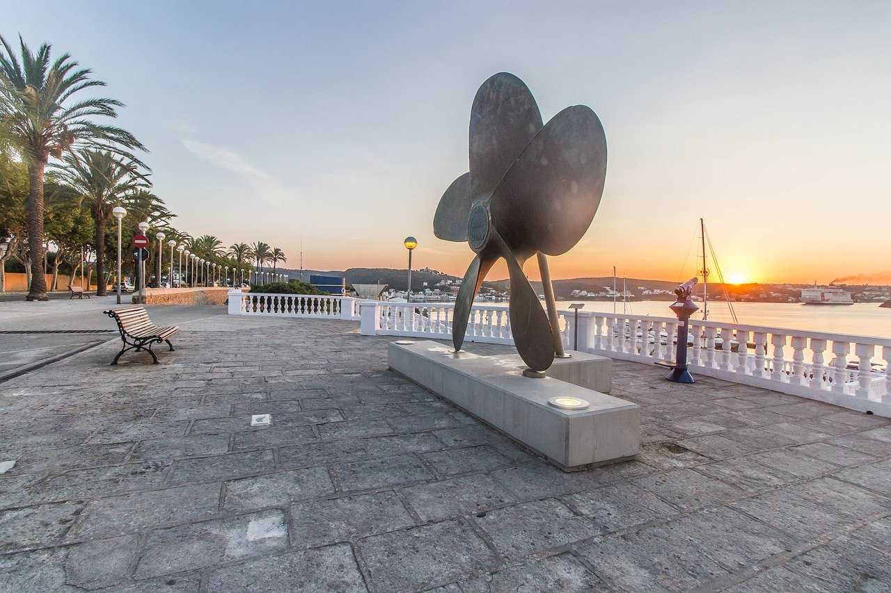

Mahón

Weather Sumary
Currently:
Current:
°F
Humidity:
%
Five Day Forecast
Mahón, Menorca
Mahón (Spanish: [maˈon]), officially Maó (Catalan: [məˈo]),[2] and also written as Mahon or Port Mahon in English, is the capital and second largest city of Menorca. The city is located on the eastern coast of the island, which is part of the archipelago and autonomous community of the Balearic Islands.
Mahón has one of the longest natural harbours in the world: 5 kilometres (3 miles) long and up to 900 metres (3,000 feet) wide. The water is deep but remains mostly clear due to the port's enclosed nature. Mayonnaise is considered to have originated in Mahón.
Its population in 2021 was estimated to be 29,125.
History
The name's origin is attributed to the Carthaginian general Mago Barca, brother to Hannibal, who is thought to have taken refuge there in 205 BC.[5][6] After the fall of the Western Roman Empire, it became part of the Eastern Roman Empire; it suffered raids from Vikings and Arabs until the Islamic Caliphate of Córdoba conquered it in 903.
Mahón was captured in 1287 from the Moors by Alfonso III of Aragon and incorporated into the Kingdom of Majorca, a vassal kingdom of the Crown of Aragon. Its harbour, one of the most strategically important in the western Mediterranean, was refortified.
In 1535, the Ottomans, under Hayreddin Barbarossa, attacked Mahón and took 6,000 captives as slaves back to Algiers, in the Sack of Mahon.
British rule
Menorca was captured in 1708 by a joint British–Dutch force on behalf of Holy Roman Emperor Charles VI, during the War of the Spanish Succession. The British saw the island's potential as a naval base and sought to take full control. Its status as a British possession was confirmed by the Treaty of Utrecht in 1713. During the island's years as a British dependency, the capital was moved from Ciutadella de Menorca to Mahon, which then served as residence for the governor, the most famous being General Richard Kane. During this period the natural harbour leading to the town and surrounding settlements were sometimes collectively known as "Port Mahon".
The island was lost to the French in 1756 following the naval Battle of Menorca and the final Siege of Fort St Philip, which took place several miles from the town. After their defeat in the Seven Years' War, France returned the island to the British in 1763. In a joint Franco-Spanish effort and following a long five month invasion, the British surrendered the island again in 1782; It was transferred to Spain in 1783 as part of the Peace of Paris. The British recaptured the island in 1798, during the French Revolutionary Wars. The British and the French tried (and failed) to end hostilities between themselves with the Treaty of Amiens in 1802. Both nations agreed to cede or withdraw from certain territories, with the island of Menorca passing to the Spanish, with whom it has remained since
Continue on Wikipedia
Weather info thanks to:Open Weather Map